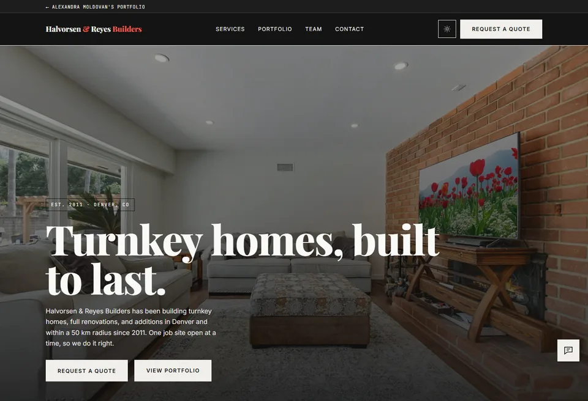
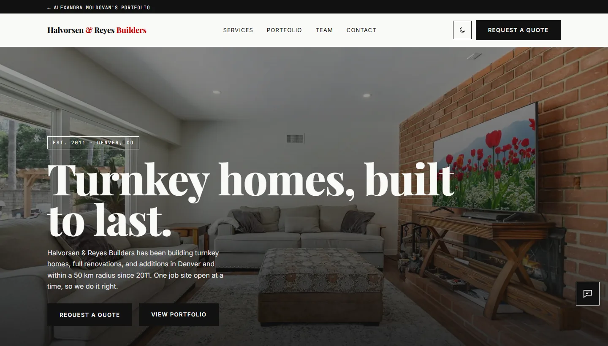
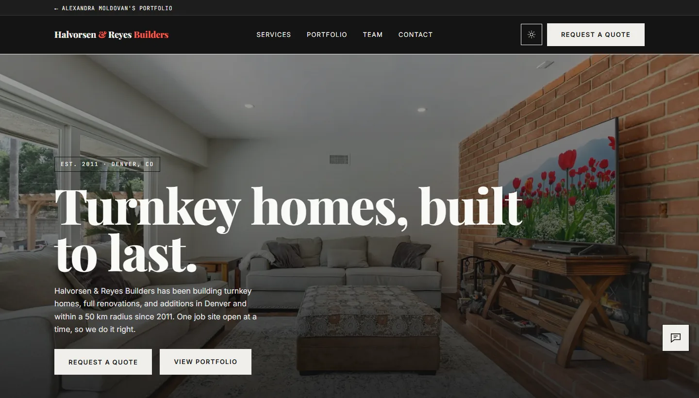
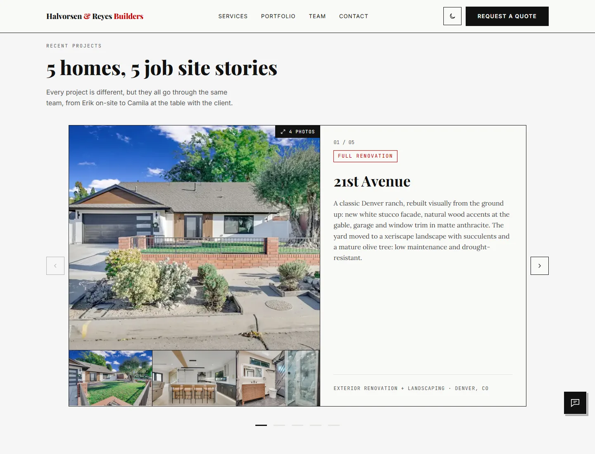
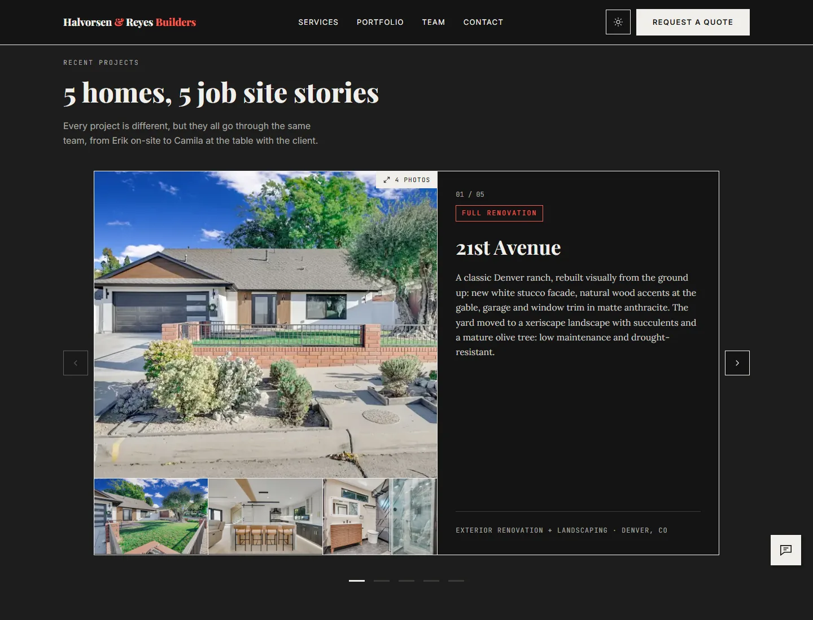

Halvorsen & Reyes Builders
A one-page website for a fictional Denver builder. I designed it to look precise and trustworthy, not trendy, and made its two public features, a quote form and an AI chatbot, safe to put in front of strangers. Try the live site, and "Admin demo" for the owners' side.


What it does
Services, 5 portfolio projects, a quote form, and a chatbot that answers questions about the company and sends everything else to the form.
My role
Product decisions, content, design, and the safety rules. The code was written with an AI assistant (Claude).
Proof
Design review 14 to 20 out of 20 · phone first paint 3.8 s to 2.0 s · 21 unit tests on every push.
Status
Live · MIT · fictional client. The quote form is live. The AI chatbot is on only for live demos, to keep costs at zero; between demos a short scripted answer replies, and the page says so.
Design case study: a builder's site that looks precise, not trendy
The client is a fictional Denver builder, in business since 2011. Its site has to look serious and trustworthy to people planning a renovation or a new home.
Pick a direction that fits a builder
I adapted a newspaper-style direction into what I called Blueprint Editorial: a grid with visible borders, square corners, black and white with one red used sparingly, and serif headlines. The grid suggests blueprints and job-site precision. The project photos stay in full color, because they sell the craftsmanship.


Cut what didn't serve a construction company
The source style came with a scrolling ticker, a "Vol. 1 Edition" label and drop caps. I removed them: they made the site look like an experiment, not a business. The portfolio became an arrow carousel, so nothing takes over the scrolling.


A dark theme that keeps the red readable
On 27 November 2026 I added a dark theme, switched with a sun/moon button. The red couldn't just carry over: #CC0000 on near-black fails the WCAG AA contrast rule, so the dark theme uses a lighter red (6.0:1).
What the reviews found
Automated design and accessibility reviews (the frontend-design and impeccable plugins) checked the site against my design spec, over five rounds. I checked each finding by hand.
- You couldn't see which form field was focused. The outline was #F0F0F0 on #F9F9F7, about 1.05:1. Fixed.
- A skip link that never appeared, and tap targets under 44 px.
- A caption that claimed too much. It named the founders under a stock photo of three unidentified men. The review flagged it as my decision, not a code bug. I rewrote it so it doesn't claim identities.
Speed was part of the design too. On a phone, first paint went from 3.8 s to 2.0 s after I hosted only the font weights in use (Lighthouse, on a test deploy). The headline also jumped from 3 lines to 2 when its font loaded; fixing its width removed the jump.
The AI chatbot and the quote form: safe for strangers
A form anyone can fill in, and a chatbot that costs money every time it answers. The risks: a runaway AI bill, spam, strangers reading requests, and a bot pushed off-topic.
Limits that are checked before any money is spent
The chatbot allows 20 messages per hour per visitor and 300 per day in total. The count is checked before the paid model is called. Past the limit, the visitor gets a normal reply pointing to the form, and the AI is never called. If the check can't run, the chatbot refuses. The form allows 3 requests per day per email address. Visitors are counted by a scrambled fingerprint of their IP address, deleted after 2 days.
It stays on topic, and nobody can read the requests
On the live site on 24 September 2026 I asked for a poem (it declined) and for the price of a 150 sqm house (no price, it pointed to the form). The public key can only add requests: reading them back with it returned 0 rows. The scripted answer never quotes a price either; a unit test checks that.
A security scan, and what I did with it
A security plugin checked the code against about 25 dangerous patterns, found no secret key, and flagged 3 things. Two were
real and I fixed them: outside scripts with no integrity check, and the hero title built
with innerHTML. The third, in the admin panel, I checked by hand: every
field is escaped first, so it was a false alarm.
How it's built
Plain HTML, CSS and JavaScript on Netlify, plus Supabase (a hosted database that can also run small server programs) for the form and chatbot.
- The AI key never reaches the browser. A small server program holds it. I confirmed it's absent in View Source and the Network tab.
- No search layer needed. The company's facts are small enough to send with every question to the model (Claude Haiku 4.5).
- The database decides who can read. This is Row Level Security: rules inside the database, as in Job Tracker.
What I haven't done yet
- No feedback from real clients or visitors: the company is fictional, and the reviews are automated tools plus my own checks. No before images: I didn't keep earlier versions.
- The chatbot has no memory of earlier questions, and its only guard against going off-topic is its instructions.
- No spending cap is set on the AI account itself; the limit in my code is the only cost protection.